Vespergrave · Room architectureVespergrave · Twenty chambers beneath the bell
Actual Android captures of twenty authored room layouts across ten biome palettes. Review fixtures use the shipping renderer, real floor coordinates and explicit ground anchors; enemies are cleared to expose the architecture. Physical doors follow the room graph in all four directions. Click a chamber to inspect its full portrait image.
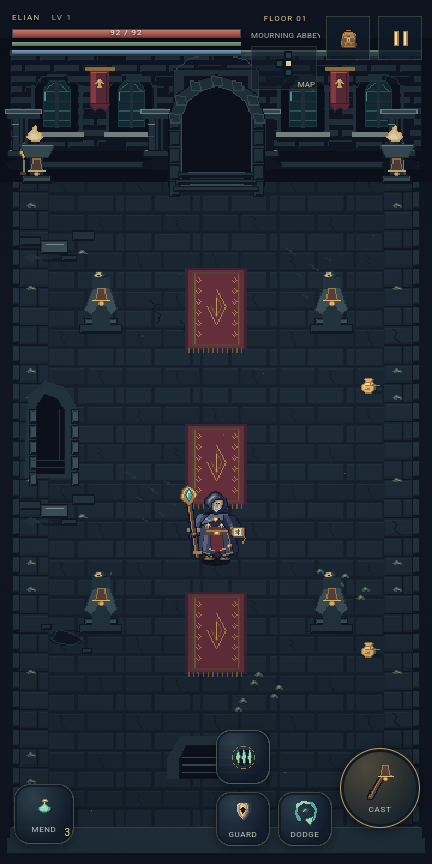
Processional Hall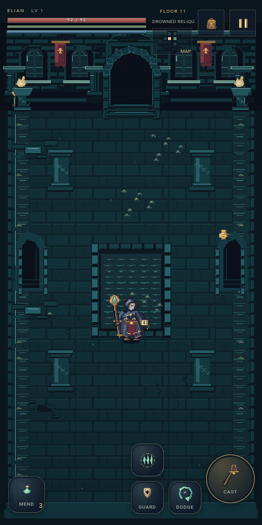
Pillared Cloister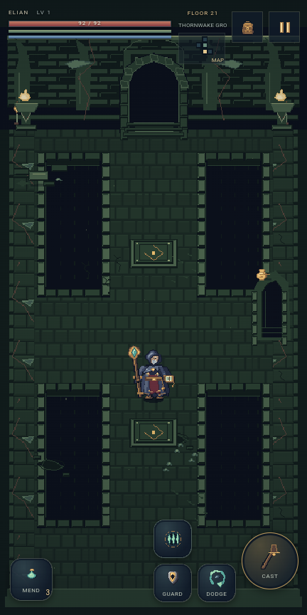
Shattered Span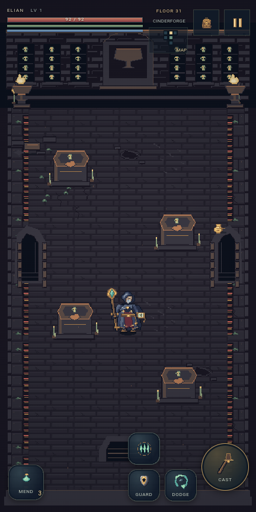
The Sleeping Vault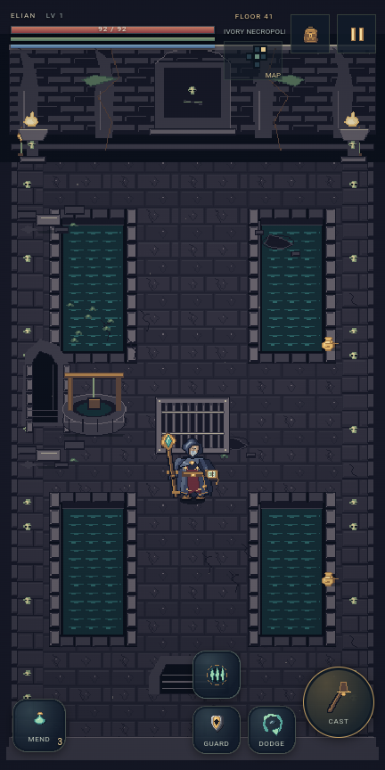
The Sunken Court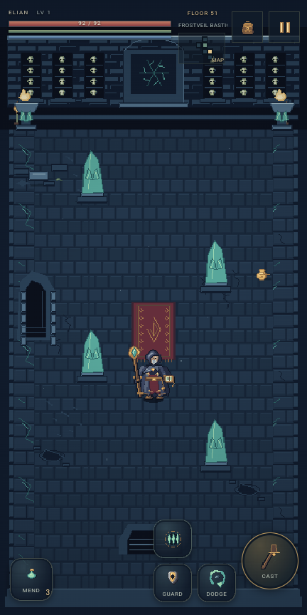
Gallery of Watchers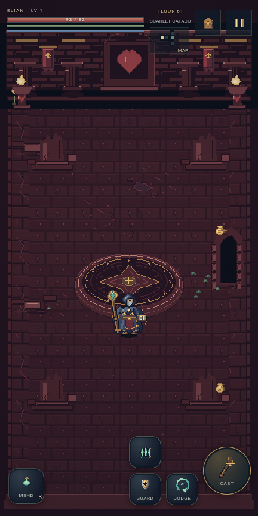
The Ring of Oaths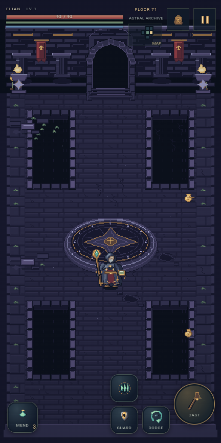
The Fourfold Crossing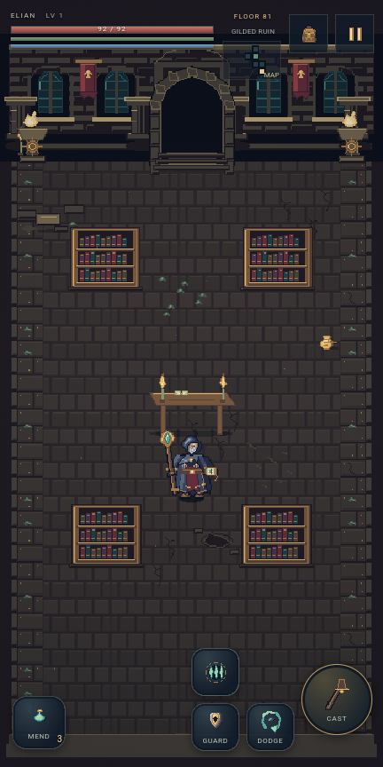
The Sealed Stacks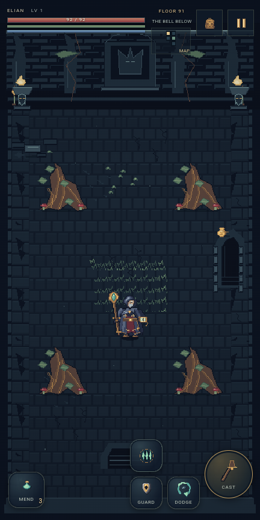
Rootbound Sanctuary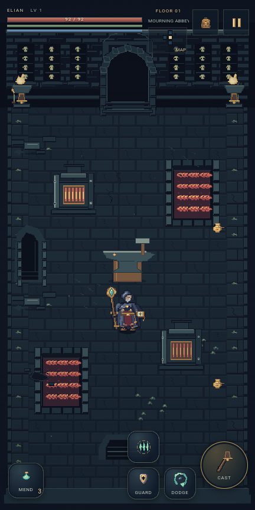
The Iron Assembly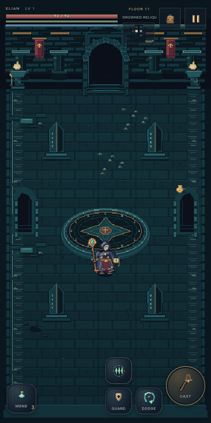
The Candle Court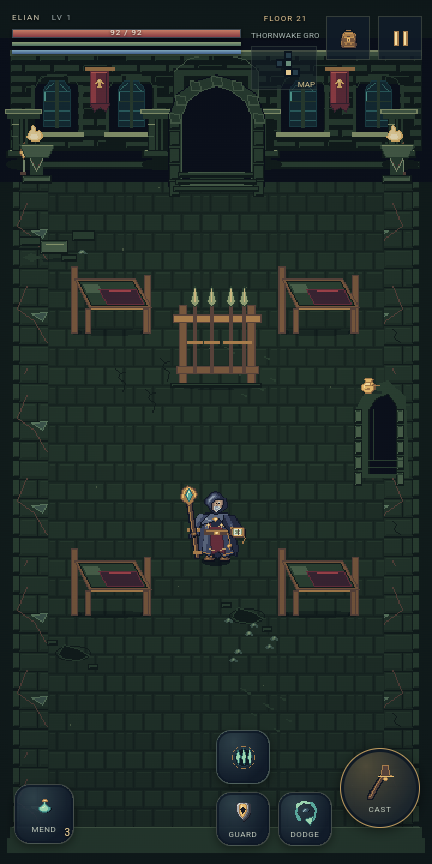
The Forsaken Barracks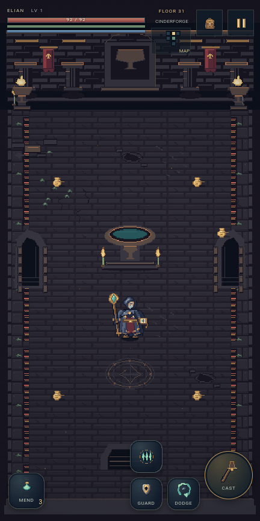
The Quiet Reliquary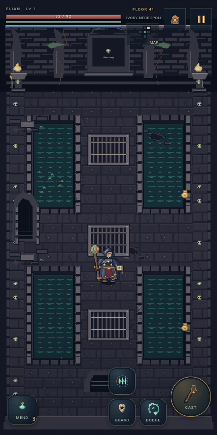
The Blackwater Aqueduct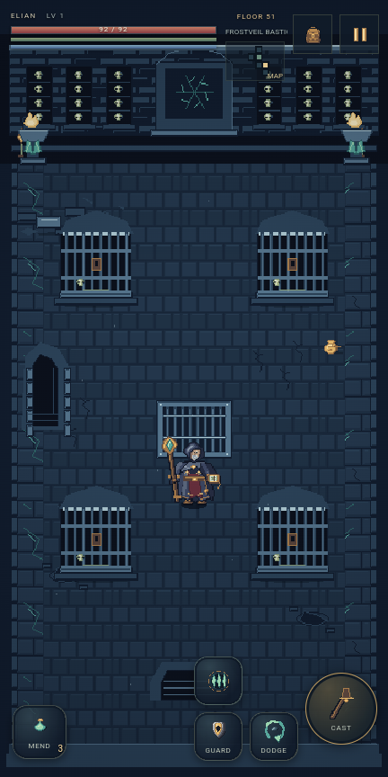
The Warden’s Cells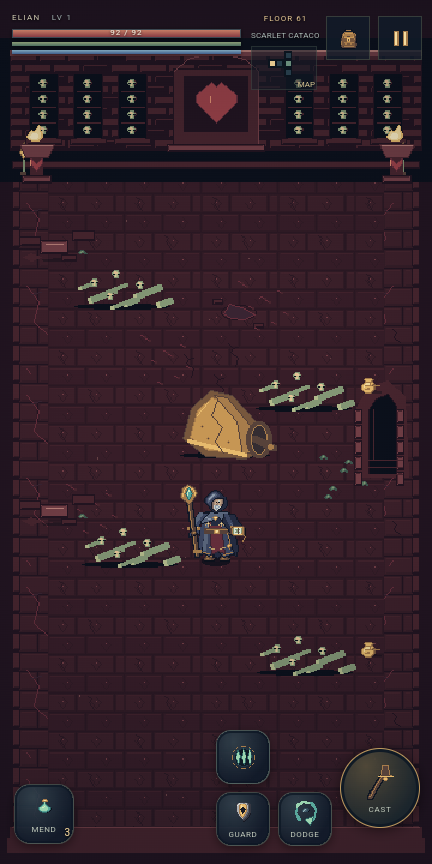
The Bone Procession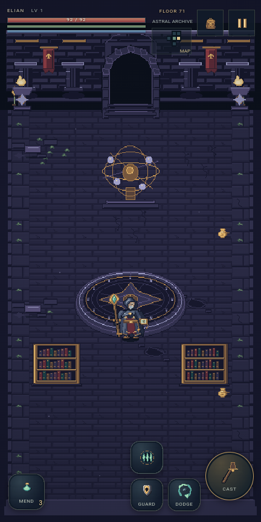
The Fallen Observatory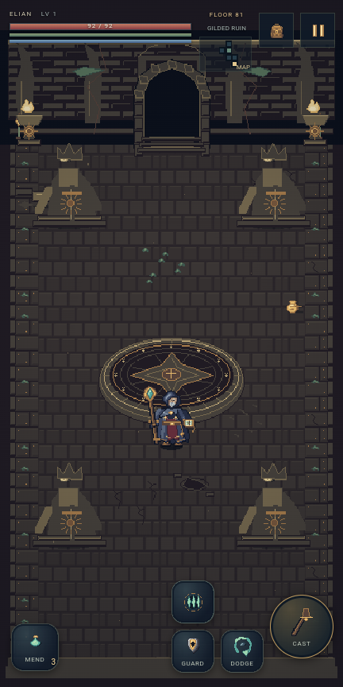
The Crownless Rotunda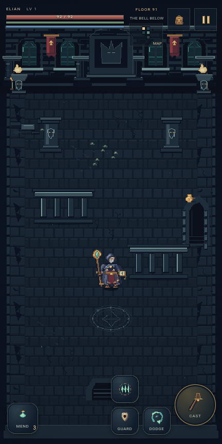
The Divided Sanctum